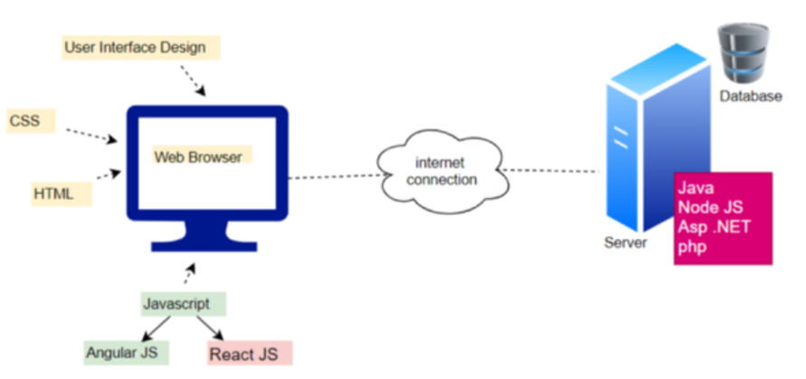

網頁應用架構

網頁應用開發可區分為前端與後端，前端開發也稱為客戶端開發，如上圖左半部，網站或網頁應用程式利用HTML、CSS與JavaScript進行設計，讓便用者可以直接查看它們並與之互動。後端開發主要著重於網站的工作方式，提供處理程序的功能和邏輯，使用的技術內容不會被用戶直接看到，後端技術是伺服器，應用程序和資料庫的組合，後端程式會編寫API或與資料庫互動的程式、建立程式庫、處理商業流程和資料架構等，常用的後端語言包含Java、PHP、.NET、Ruby、Python、SQL、JavaScript等。雖然後端開發著重於網站的工作方式，但是仍須借助前端設計來呈現後端處理的結果，因此後端開發仍須具有前端開發的能力。
課程將介紹ASP.NET Core框架，ASP.NET Core是一個免費的開源 Web框架並繼承ASP.NET，它由微軟負責開發並維護。ASP.NET Core是一個模組化框架，可在完整的.NET Framework、Windows和跨平台 .NET 上運行。不同於微軟ASP.NET架構，ASP.NET Core最大的優勢為開源與誇平台(支援Windows、MacOS與Linux)，而ASP.NET僅用於開發Windows平台Web應用。
軟體安裝
課程使用微軟Visual Studio community 2019，使用者可至官網下載，軟體下載與安裝步驟如下：
1. 下載軟體-點選下載Visual Studio

2. 安裝軟體-下載後執行並點選繼續

3. 安裝模組-選擇ASP.NET與網頁程式開發、資料儲存與處理後點選安裝

4. 安裝.NET-下載後安裝
請至官網下載對應平台最新版.NET SDK並安裝。
5. 軟體註冊
Visual Studio Communinity為免費軟體，但需要註冊才能免除30天試用限制，使用者如有微軟帳號，請直接用微軟帳號登入即可，如果沒有，請自行建立。